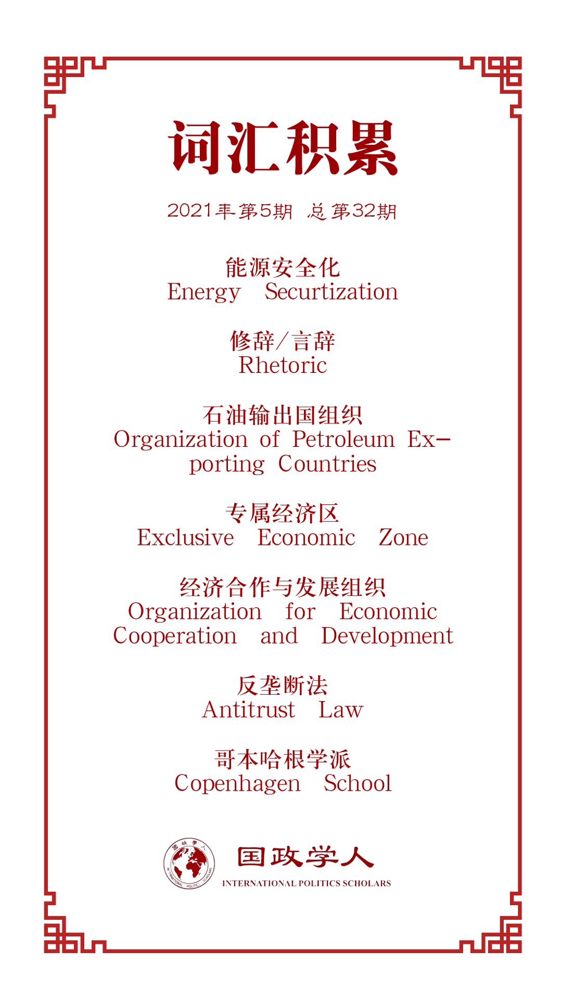

收录于合集

作品简介
【作者】 Elai Rettig，以色列海法大学政治学博士，美国华盛顿大学犹太、伊斯兰和中东研究部（JIMES）教研员，研究兴趣为能源治理、环境政治、能源安全与外交政策的相互作用等。
【编译】 尤力（国政学人编译员，上海外国语大学国际关系与公共事务学院）
【校对】 丁伟航
【审核】 朱文菡
【排版】 黄晨蕊
【美编 】方引弓
【来源】 Elai Rettig (2021). Securitizing Energy Cooperation: Israel’s Regional Shift in the East Mediterranean, Foreign Policy Analysis , doi: 10.1093/fpa/orab006
【归档】 《国际关系前沿》2021年第5期，总第32期。
期刊简介
《外交政策分析》（ Foreign Policy Analysis ）杂志是由牛津大学出版社代表国际研究协会出版的季刊。该期刊旨在以比较或具体案例研究的方法研究外交政策的决策过程、效果、原因或结果。2017年影响因子为1.386。
**** 能源合作安全化：
以色列在地中海 东部
地区的区域转移
Securitizing Energy Cooperation:
Israel’s Regional Shift
in the East-Mediterranean ****
Elai Rettig
内容提要
本文主要讨论了一国能源供应的可靠性对该国区域能源合作政策制定的影响。在能源供应充足时，国家会寻求区域合作的机会；在能源匮乏时，对国际社会，决策者会采用自由主义的安全观，而对国内则采用现实主义的范式。同时，作者选取了2009年天然气大发现后以色列的政策改变以及该国政府如何将新政策导向不同受众的案例来检验其论点。
文章导读
01
引言
长期以来，一些研究认为，政治精英在制定国家能源政策时，倾向于考虑现存的国家安全，而这样的政策制定方式会损害国家机构之间的内部合作。然而，这种做法对一国国际合作前景的影响却不那么清楚。而一些学者则指出了一种相反的效果，当作为跨国家安全威胁的能源或环境政策议题被提出时，政策制定者可以充分调动国内资源，并鼓励其他国家和国际机构一起努力，发起共同倡议。这些努力最终可能会带来互利的收益，促进国家间的关系和区域合作。
与此相反，其他研究认为，对于石油或天然气等重要商品，国际体系中各国之间经济互惠的观念往往被每个国家对自身供应安全的担忧所掩盖，而这是一个鼓励区域能源竞争而非合作的因素。因此，这些学者指出，国内政治领域能源政策安全化的趋势阻碍了其他区域能源合作倡议的实现。
事实上，能源政策安全化导致了国际体系冲突加剧的结果。为了弥合这种结果上的冲突，最近的文献不仅关注政治精英运用安全的政治话语来推进或阻碍合作目标的目的，还关注这种话语试图解决安全问题的类型。这类研究的重点在于决策者如何以及何时改变和调整其政治话语以促进某个目标的实现；如何获得不同受众对某个目标的支持；以及什么因素塑造了这些目标。
本文首先回顾了能源安全在概念化上的模糊性以及精英们为促进各种外交政策目标而进行的政治话语上的操纵。然后，本文分析了能源安全化是否有助于该领域区域合作倡议的提出，重点讨论了受众接受程度在回答这一问题中的作用。最后，选取以色列政府在地中海东部地区的政策转变进行案例研究。
02
文献综述
1.能源政策安全化
“安全化”描述了一个过程，在此过程中，行为体将各种政策问题构建为构成生存威胁的安全事项，而随之产生的政治紧迫感使其有理由使用非常措施来保卫政治共同体。决策者通常认为，确保本国可靠和负担得起的能源供应属于国家安全的“高度政治”，因为能源资源在提升国家工业和军事实力方面发挥着至关重要的作用。因此，一个国家的能源安全被视为其外交政策制定的重要组成部分。
尽管如此，安全仍是一个模棱两可的词，经常被用来描述一个国家能源政策相互冲突的方面。在研究能源安全如何影响外交政策和与外部行为者的接触时，这种模糊性尤其突出。而正是这种模糊性，使得精英们能够通过将能源安全视为紧急问题来推动一系列相互冲突的目标。
因此，学者们更多地将能源安全视为一个不断发展的社会概念，即通过话语建构来表达社会脆弱性以促进预期政策，而非客观的安全必要。
2.能源安全化与区域合作倡议
区域能源合作倡议是指邻国们为追求共同目标、经济利益（主要是能源部门）、能源资源的获取而设计的政治体制机制。这些互动包括能源的开发、共享或市场转运，有关国家能源部门敏感信息的共享，通过磋商提高对外部能源供应商的议价能力并降低进口价格，通过长期合同在优惠供应条件下进行能源交易。
哥本哈根学派的学者认为，国内政策的安全化本质上是一个消极概念，不利于区域或国内合作倡议。他们认为，安全的政治话语作为一种表现行为的使用，会导致破坏民主程序的特殊政治合法化、快速决策制度化、产生“他者”的敌人类别，从而阻碍了合作妥协。
与之相反，其他学者认为，能源安全化的过程将促进各国在能源和环境相关问题上的合作。研究认为，对能源安全的关切使各国能够共同努力，参与能源相关的共同倡议，最终实现互利共赢。而这有有助于稳定地区内的国际关系。
3.能源安全化与受众的接受程度
学者们同样强调受众的接受程度在能源安全化结构中的重要性，他们认为，在过去对安全化的研究中，受众在接受政治话语并产生共鸣、回应并快速跟进政策方面的积极作用被忽视了。
在区域能源合作目标安全化的背景下，因为不同受众对安全结构的接受程度不同，政策制定者面临的主要挑战是通过其话语的调整提高国内外受众的接受程度。研究指出，政策制定者以安全为重点，争取国内对各种外交政策目标支持的论点主要来自新古典现实主义。通过关注自我保护、竞争和在国际体系中的主导地位，现实主义激发的论点直接触及民族主义情绪，因此更容易被国内的受众接受。相比之下，国外的受众自然不太愿意接受以牺牲自己为代价强调他国主导地位的言论。因此，选取新自由主义“商业和平”理论中，强调通过合作和贸易实现共同利益和相互安全的部分作为论据，会在受该政策影响的外国受众中产生更强烈的共鸣。
03
案例研究
1.研究设计
为了研究一国能源部门发生剧烈变化后，其能源安全化的政治话语是如何适应和改变并同时促进国内外受众的不同安全结构的，本文借鉴了以色列在天然气供应方面的宝贵经验。在2009年发现海上天然气储备后，以色列决策者改变了长期以来将以色列视为该地区一个孤立的政治和经济实体的观念，并鼓励其政府寻求与邻国加深经济联系。为了推行新的区域政策，以色列政府将向其邻国出口天然气视为一个现存的国家安全问题，以加强以色列在该地区的安全和主导地位，这一观点获得了国内的支持。与此同时，它对国际社会采用了不同的安全话语，强调能源贸易给该地区带来的稳定和经济利益。通过话语分析追踪以色列能源供应变化过程，学者们可以更深入地了解决策者在能源安全化实践上的转变和适应，以及它们对外交、经济政策制定和实施的影响。
2.研究方法
为了追踪以色列决策者在2011年至2019年期间根据以色列能源部门不断变化的情况调整能源安全话语的过程，本研究采用了访谈和文本分析相结合的方法。采访的对象包括上述时间段参与能源政策制定过程的以色列政府、安全和外交部门官员，以及作为政策接受方的土耳其、希腊驻以色列大使。访谈结合了对公开解密协议、来自以色列各部、委员会和其他相关政府机构的听证会以及源自以色列、塞浦路斯和土耳其的新闻稿的分析，以检测和比较不同官员在此期间对国内外受众发出的“声音”，以及这些“声音”如何改变和适应以色列能源部门的发展。
3.研究背景
长期以来，以色列一直在努力保证其市场的化石燃料供应。由于目前该地区政治中存在武装冲突的威胁，几十年来，以色列能源政策制定者一直担心石油进口被突然中断。在1979年前，为了绕过阿拉伯对其的石油禁运，以色列主要依靠伊朗来满足其需求。
但是，伊朗伊斯兰革命的爆发导致以色列石油进口的中断，为了保证其军事和运输部门的石油供应，该国迅速转换为煤炭发电。而煤炭之所以被以色列决策者视为更有利的发电燃料来源，是因为在20世纪80年代和90年代，煤炭来自对色列更友好的国家。为了弥补伊朗作为其主要石油供应国的损失，以色列转向西非、中美洲和北海的几个石油出口国。墨西哥在当时成为了最大的石油供应国，但以色列也设法与石油输出国组织（OPEC）成员国达成协议，因为这些成员国抵制墨西哥，但它们愿意与以色列进行秘密石油贸易，以换取他们无法从其他西方国家那里获得的武器。与此同时，全球石油“现货市场”的出现以及整个1980年代和1990年代新非OPEC石油出口国的加入大大减少了阿拉伯石油禁运的影响，使得以色列获得石油的来源增加。
为了继续寻求降低对石油供应商的依赖，并使其能源部门多样化，以色列最终在21世纪初转向了天然气。1999年，梅里和诺亚两个小型海上气田的发现推动了这一转变。在与埃及总统穆巴拉克进行了十年的谈判之后，以色列于2008年从埃及进口了新发现的天然气。到2010年，天然气发电量占以色列发电总量的40%，煤炭发电占其余发电量的40%。
4.研究结果
**
**
（1）以色列的范式转变
以色列高度安全化的能源行业的一个重大转变始于2009年和2010年发现的两个主要海上气田——塔马尔和利维坦。后来在2012年和2013年，卡里什和塔宁两个较小的油田又补充了这些油田。到2014年，塔马尔已经提供了以色列所有的国内天然气消费。能源部预测，到2030年，天然气将提供以色列80%的发电量，从而大幅淘汰以色列燃料组合中的煤炭。
早些时候，以色列领导层认为天然气的发现不仅仅有经济上的好处，而且也是一个重要的安全和地缘政治资产。为强化以色列在该地区的合作立场，该国外交部和国家安全委员会于2015年7月发布白皮书，倡导出口以色列天然气的“重要地缘政治要务”。
这两份报告使用的话语强调贸易、安全和稳定，表明以色列外交政策观念正在发生范式转变：从通过自我保护实现安全的现实主义范式转变为通过合作实现安全的自由主义范式。因此，虽然传统的安全考虑严重拖延或阻碍了该国能源部门的区域合作计划，但现在这些计划正在逐渐被重提和积极推动。以色列、希腊和塞浦路斯的国防部长举行会议，强调自由、商业、和平观念，通过天然气贸易形成新的“希腊联盟”。“三位部长在2017年11月发表了一项共同声明，呼吁建立一个“稳定轴心”，并提出“逐步将更广泛的地区从冲突地区转变为和平、稳定与合作地区”的愿景。同时，由于两国即将达成天然气贸易协议，于2016年6月签署的改善与土耳其关系的官方条约也被公开。
另一个突出例子是在2019年1月成立的东地中海天然气论坛，该论坛是以色列、埃及、塞浦路斯、希腊、意大利、约旦和巴勒斯坦当局就区域天然气开发进行合作和对话的框架。这是以色列为了进一步巩固其在东地中海分区的地位所参加的第一次区域经济论坛。因此，以色列政府成功地建立了对其能源供应的信心，通过管道外交加强了与邻国的经济和政治联系，这也标志着其区域政策的成功转变。
（2）以色列国内政治中的天然气安全化
虽然以色列的区域能源政策经历了从自我保护到合作的重大范式转变，但其国内政治与强调能源自给自足和对资源存在潜在竞争的传统现实主义立场保持一致。这一双重途径首先在Zemach委员会的部际审议中显现出来，在多方的协商下，Zemach委员会最终得出结论，政府应将47%的天然气供给国内市场，这标志着这两种方法之间的平衡。然而，随之而来的强烈的公众反弹说服了政府将国内的专项拨款上升为60%。
Zemach委员会期间频繁使用的安全话语，是几年后就天然气开发监管框架展开的更大规模公众辩论的一个小小预演。2012年11月，以色列反垄断局宣布，气田的私人合伙企业构成垄断，必须将其大部分股权出售给另一家开发商，以确保向以色列国内市场出售天然气。经过几年的审议，以色列政府于2015年7月宣布，已达成气田开发框架，该框架说服各公司出售其部分股权，同时确保加快开发并维护其经济利益。声明发布后不久，以色列每周都有大规模的街头抗议活动，抗议者认为该框架不能确保降低电价，而且对天然气公司过于有利。很快，“天然气之争”成为以色列民间社会的一个具有号召力的议题，年轻的抗议者和手持标语“天然气属于我们所有人”的政治反对党也加入其中。2015年5月，反垄断专员宣布，他不接受政府的框架，要求政府要么重新与这些公司展开谈判，要么完全绕过反垄断机构。后一种选择只有通过援引反托拉斯法第52条的一项有些模糊的规定才有可能，该条允许政府出于国家安全的原因规避反托拉斯法的指示。
为了证明通过第52条绕过反垄断当局并加快天然气开发和出口的空前尝试是合理的，政府指出了天然气发现的地缘政治方面及其与国家和地区安全的相关性。这些论据在很大程度上依赖于通过自我保护和竞争实现人身安全的经典现实主义范式。总理办公室在外交部和国家安全委员会白皮书的支持下，提出了三个主要论点来论证这一方法。
首先，以色列必须迅速向其邻国输送天然气，以防止它们破坏稳定。政府认为，埃及和约旦天然气供应的匮乏将导致严重的电力短缺，从而导致其抗议和政权的不稳定。因此，气田开发的任何推迟都将增加邻国政府失去对其人口控制的可能性，从而允许恐怖分子从以色列的东部和南部边界渗透进来。第二个论点是，以色列必须在伊朗之前迅速向埃及和约旦提供天然气，否则伊朗将被赋予更大的地区影响力，甚至可能通过这些国家进入以色列边境的军事通道。第三个论点是，以色列应加快对塞浦路斯和希腊的出口，以防止欧盟因其对巴勒斯坦人的政策而对以色列实施制裁，因为制裁的实施需要包括塞浦路斯和希腊在内的所有欧盟成员国的一致同意。
国内公众对天然气的斗争最终促使政府重新审视其以区域为中心的话语，转而强调天然气出口的必要性。同时，以色列政府强烈希望扭转其在该地区长期以来的孤立主义作用，因此产生了两种平行的以安全为重点的话语，揭示了能源安全化话语促进或阻碍区域能源合作的不同方式。
04
结论
本文研究了在一国能源供应的可靠性提高后，决策者如何调整其使用的话语来吸引国内外受众，以鼓励区域能源合作倡议。为了追溯这一过程，本文以以色列自2010年以来的天然气管道外交为例。该案例首先表明，新的国内能源发现如何能够极大地改变长期以来人们对地区孤立和竞争的看法，并鼓励决策者寻求与邻国开展更深入的经济合作。
为了加快国家向更具合作性的区域政策的转变，以色列政策制定者主张同时针对不同的受众对比安全模式。政府内部报告和协议表明，以色列安全官员及其外交核心如何利用长期以来被拒绝的“商业和平”论据，在该地区的驻外大使和其他国家官员中推动政府新的区域倡议，强调他们在与埃及、约旦的冷和平升温、与土耳其关系正常化、增进地区稳定等方面的作用。与此同时，以色列政府的官方机构，主要是总理办公室、能源部，国家安全委员会继续通过新闻稿和公开报告，对狂热的受众使用安全话语，以此获得支持，规避对政府新的区域能源政策的政治和监管阻力。
最终，以色列的案例表明，与哥本哈根学派的建构主义方法相反，能源安全化的做法，本质上不会阻碍或推进经济区域合作倡议。相反，能源安全化有助于加强政府对其能源供应可靠性的信心与参与区域能源合作机会的意愿之间的联系。
此外，本研究还提出了学者们必须与“安全谈话”相协调的论点，认为“安全谈话”是区域能源决策的重要组成部分。虽然增加能源安全的必要性往往是合作倡议的主要动力，但同样也可能阻碍此类倡议取得成功。一旦意识到这一悖论，学者们可以将政策制定者操纵安全话语视为推进所期望的合作政策举措的必要步骤，并将研究重点放在不同的安全模式如何使这种操纵在该区域所有相关受众中获得成功。
译者评述
在理论层面上，本文主要讨论了一国能源供应的可靠性对该国区域能源合作政策制定的影响。在能源供应充足时，国家会寻求区域合作的机会。当一个国家的能源供应出现实质性改善时，政策制定者不再那么关注该地区能源供应的竞争，而是转向寻求合作倡议。在能源匮乏时，考虑到国际受众和受该倡议影响的他国政府官员，政策制定者调整了安全的政治话语，使之更符合新自由主义“商业和平”的原则，强调公益。同时，考虑到国内受众及其民族主义情绪，政策制定者沿用了传统现实主义的观点，认为合作对于实现该地区的“能源独立”和“能源指导”是必要的。从这个意义上说，因为每个受众对于不同安全建构话语的接受程度不同，能源安全化和区域合作之间的联系可以理解为该话语在国际和国内受众之间的两级博弈。
在实践层面上，作者选取了以色列作为案例来检验这一论点。他追溯了2009年和2010年一系列重大天然气发现对该国主要决策者长期以来对区域孤立的看法的改变以及寻求与邻国开展更深入的区域经济合作的过程。本文还通过对在以色列、希腊和土耳其工作的以色列安全、政府和外交官员进行深入访谈，结合对以色列政府机构解密报告和协议的文本分析，探讨了相关政策制定者如何运用安全的政治话语来推进其新的区域能源政策目标的同时，规避国内政治和监管部门对这一举措的反对。该案例通过采用现实主义和自由主义学派中相互矛盾的论点，阐明了安全驱动的政治话语如何促进国内外受众的这种转变。
词汇整理

文章观点不代表本平台观点，本平台评译分享的文章均出于专业学习之用, 不以任何盈利为目的，内容主要呈现对原文的介绍，原文内容请通过各高校购买的数据库自行下载。
好好学习，天天“在看”
国政学人
支持学术公益与知识传播
微信扫一扫赞赏作者 __赞赏
已喜欢，对作者说句悄悄话
取消 __
发送给作者
发送
最多40字，当前共字
上一页 1/3 下一页
长按二维码向我转账
支持学术公益与知识传播
受苹果公司新规定影响，微信 iOS 版的赞赏功能被关闭，可通过二维码转账支持公众号。